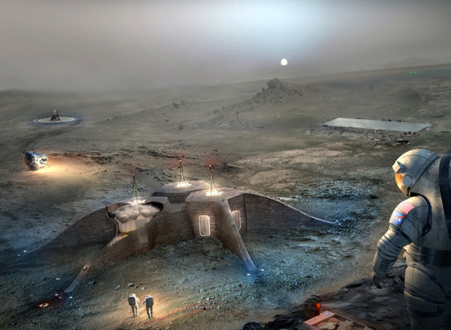
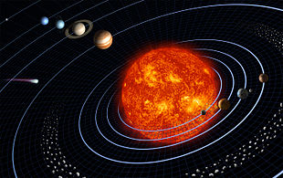
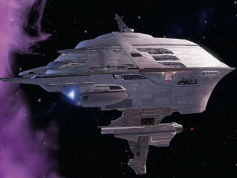

La mer de la tranquillité : 2500€ une journée sur la LUNE.
UNE CROISIERE STELLAIRE DE UN AN POUR 25 000€ !
Un billet pour l'Axiom, c'est le point de départ d’un séjour sans limite dans le systeme solaire qui ne dort jamais. Tous les guides de voyage de l'espace l'attestent : une top destination à voir au moins une fois dans sa vie. CENTAURI STELLAIRE propose des vols quotidiens au départ de la Terre.
La première image qui marque les esprits lors d’un voyage dans le systeme solaire, ce sont les étoiles pour les amateurs d'astronomie. Mercure, Venus ou encore Mars... que l’on admire. Mercure, station balnéaire, des températures de -173 °C la nuit et 427 °C le jour à l'équateur, idéal pour avoir un bronzage parfait.
Un vol pour Mars ? c'est le début d’une plongée dans une destination culturelle incontournable. les plus belle maisons closes réputés sur terre et ces femmes à trois seins. De même que les musées qui peuplent la ville comme Barsoom, le Metropolitan Museum of Art ou encore le Guggenheim. Barsoom abrite de nombreuses galeries d'art et des antiquaires qui cachent de nombreux trésors. Prêt à vivre l’expérience de la ville qui ne dort jamais jusqu’au bout de la nuit ?
Les night-clubs tendance de Barsoom vous emmèneront jusqu’au petit matin... Lors de votre séjour dans la « Big station » offrez-vous un véritable tour de l'univers ! Une pizza à Little Italy sur les lunes de Saturne , un wok à Chinatown, un bortsch à Little Odessa… Pour un séjour à la Jupiteriene, privilégiez un brunch à Meatpacking, puis profitez de la verdure légendaire de Central Pluton. On en oublierait presque la station spatiale internationale, le symbole de votre voyage dans l'espace !
Le musée de l'I.S.S : 499€ la journée.
(Billet ni echangeable ni remboursable et nous assurons la sécurité en cas de dépressurisation.)
Le gite et le couvert disponible sur place.
(La consommation d'alcool est déconseillé lors des sorties en scaphandre.)
Édito / Août 3016 :
Que l’on soit en vacances ou pas, le mois d’août est l’occasion de prendre un peu de recul ou de regarder plus loin, autour… pour mieux se projeter. Pourquoi pas sur la LUNE pour y vivre la Centauri-Stellaire Expérience ? En parcourant notre carnet de voyages, peut-être aurez-vous envie de découvrir les satellites de JUPITER pour y observer de merveilleux panoramas ? Ou alors MARS ou MERCURE pour y observer des paysages incroyables… En août, c’est aussi le moment de penser aux week-ends : allez découvrir VENUS dans les coulisses des distilleries, ou PLUTON, au plus loin du systeme solaire.
Les vaisseaux :
La cinquième génération de vaisseau est une classification générale des vaisseaux spatial à partir des années 2516 jusqu’à nos jours. Elle représente des concepts et designs développés dans les années 2310 et 2402. Le seul représentant en service de cette génération est l'Axiom produit à 185 exemplaires, en comprenant les prototypes, et dont la production a été abandonnée en 2499. La Chine et la Russie développeraient actuellement leur propre vaisseau de cette génération.